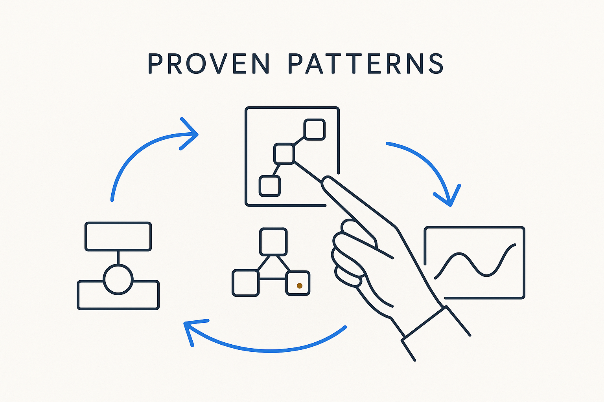

Proven shapes you reach for instead of inventing — a pattern captures a repeatable solution (Data Vault, dimensional, temporal) so you compose from known-good parts.

> Proven shapes you reach for instead of inventing — a pattern captures a repeatable solution (Data Vault, dimensional, temporal) so you compose from known-good parts.
A pattern is a proven shape you reach for instead of inventing one on the spot. Hub-link-satellite, a dimensional star, a bi-temporal history, a point-in-time table — these are solutions the field already worked out, tested against real problems. Naming them as patterns means you can recognize the situation, apply the known-good shape, and spend your thinking on what is genuinely new rather than re-deriving what a giant already solved.
Patterns are how not reinventing the wheel becomes practical. The essentials distilled from Data Vault, Kimball, the Unified Star Schema and the rest live on as patterns you can pull off the shelf and compose. And when a pattern is captured as structured metadata rather than tribal knowledge, the AI can apply it too — generating the right shape consistently instead of guessing.
Patterns pair with their siblings: rules say what must hold, skills say how to execute, and patterns say what shape to reach for. Compose from proven patterns and the model is sound by construction; ignore them and you rediscover old mistakes at your own expense.
Where it lives: the method layer of Breakthrough Modeling — proven shapes, composed rather than reinvented.